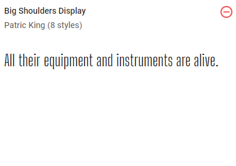
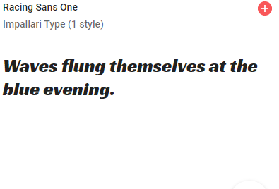

Fonts:

Big Shoulders Display
We will use it on manu tabs, subtitles, paragraphs and footer. Size 20px up to 25px, Midium Styles varying to Bold or Extra-Bold

Racing Sans One
We will use it on titles, headlines, buttons and invitation to act. Size 30px up to 45px.